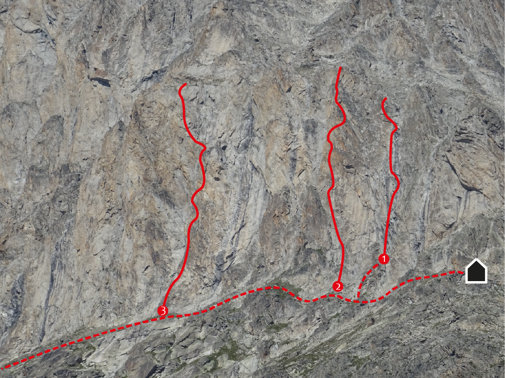

Pfeiler
Die Pfeiler beginnen direkt hinter der Baltschiederklause in nordwestlicher Richtung. Dort wurden drei lohnende Routen in hervorragendem Fels erschlossen. Bei allen Routen kann auf „Obere Bänder“ ausgestiegen werden. Es wird jedoch empfohlen, über die Routen abzuseilen. Jede Route ist am Einstieg angeschrieben und gut zu finden.
Zustieg: Von der Baltschiederklause dem Weg in nordwestliche Richtung folgen. Nach wenigen Minuten erreicht man bereits die erste Route am 3. Pfeiler.
